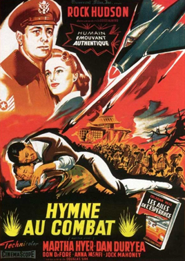
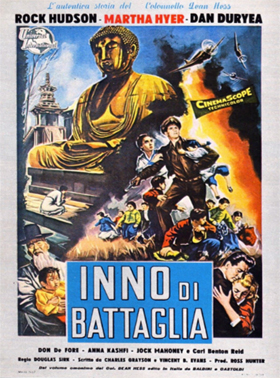
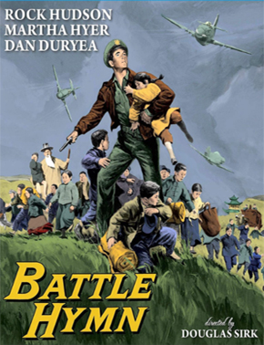

Battle Hymn
General Earle E. Partridge
SYNOPSIS
A remorseful bomber pilot-turned-minister rejoins for the Korean War.
Dean Hess, who entered the ministry to atone for bombing a German orphanage, decides he's a failure at preaching. Rejoined to train pilots early in the Korean War, he finds Korean orphans raiding the airbase garbage. With a pretty Korean teacher, he sets up an orphanage for them and others. But he finds that to protect his charges, he has to kill.
The real Lt. Col. Hess was a technical advisor to Universal to ensure that the final production did not stray far from his original biography. Nonetheless, the inevitable "Hollywood" screenplay prevailed. Hess had a hand in vetoing the studio's first choice to play him: Robert Mitchum, having reservations about the actor's character.
Unable to film in Korea, locations shifted to Nogales, Arizona that provided at least a modicum of similar landscape. On Soon Whang, Director of the Orphans Home of Korea arrived in the U.S. along with 25 orphans who would reprise their own lives on film. In order to replicate the ROK unit, the 12 F-51D Mustangs of 182nd Fighter Squadron, 149th Fighter Group of the Texas Air National Guard were enlisted by the USAF to provide the necessary authentic aircraft of the period. During filming, an additional surplus F-51 was acquired from USAF stocks to be used in an accident scene where it would be deliberately destroyed.
The gold flying helmet with the United Nations emblem that Rock Hudson wears in the movie was Dean Hess's actual helmet. It was a Navy-issue helmet that Hess scrounged from a Navy pilot who crash-landed at their airfield in Korea (since the Navy pilot was going to be issued a new helmet as a result of the crash-landing). The helmet is now on display at the National Museum of the United States Air Force at Wright-Patterson AFB, Dayton, Ohio. ANG F-51Ds "stood in" for the ROK.
Richard Loo filmed scenes as a character based on ROK Air Force chief General Kim Chung-yul, which were deleted from the final release print, though he was still listed in the film’s credits.


